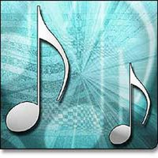

|
|
|
|
|
LA MUSICOTERAPIA Por Cristina I. Vargas R. Licenciada en música por la U.C.R.  La musicoterapia es hoy día, objeto de atención y estudio dada su aplicación en distintos problemas de salud humana de orden psicoanalítico. Esta revisión incluye un bosquejo histórico sobre las distintas eras en el desarrollo de las llamadas formas musicales, la contribución de los grandes compositores en tal campo y los beneficios que se pueden obtener de algunas de las formas musicales en la salud humana. ¿Qué es la Música? Han surgido, por razones de orden psicológico, social, cultural e histórico, múltiples y diversas definiciones que pueden ser válidas al momento de expresar qué se entiende por música. Se puede definir como “el arte de organizar sensible y lógicamente una combinación de sonidos y silencios, utilizando los principios básicos de la melodía, la armonía y el ritmo, mediante la intervención de complejos procesos psicoanímicos”. El fin de este arte es “suscitar una experiencia estética en el oyente, y expresar sentimientos, circunstancias, pensamientos o ideas”. “La música es un estímulo que afecta el campo perceptivo del individuo, así el flujo sonoro puede cumplir con variadas funciones (entretenimiento, comunicación, ambientación, etc.)” (Wikipedia, 2008). Kamien (1980), nos presenta un panorama sobre el desarrollo e historia de la música clásica según sus etapas y contribuciones de los más connotados compositores. El autor se refiere al estilo musical como la vía característica de usar la melodía, el ritmo, el color tonal, la dinámica, la armonía, la textura y la forma. La vía particular con que tales elementos son combinados, puede resultar en un sonido total que es distinto o único. El autor se refiere luego a que los estilos musicales cambien de una era en la historia a la siguiente. Esos cambios son continuos. Aun más, los compositores que usan el mismo vocabulario musical, pueden crear una manera personal de expresión. También nos reafirma que el estilo musical es moldeado por los desarrollos políticos, económicos, sociales e intelectuales. Es por ello que para lograr comprender el estilo de una composición, se debe conocer cuál es su función en la sociedad. Según el autor, la historia del arte musical en la cultura occidental puede ser dividida en períodos (cuadro N1). Destaca además para cada período no sólo los principales estilos musicales sino los compositores que los caracterizaron.
CUADRO N1 HISTORIA DE LA MUSICA PERIODO FORMA O ESTILO MUSICAL Edad Media Canto Gregoriano (450-1450) Música secular Polifonía El nuevo arte en Francia e Italia Renacimiento Música sacra: El motete. La misa (1450-1600) Música secular: Música vocal El Madrigal Música instrumental Barroco El concierto grosso. La fuga. La ópera (1600-1750) La sonata. La suite. El coral. La cantata El oratorio Clásico La sonata. El tema y variaciones. (1750-1820) El Minueto y Trío. El rondó. La sinfonía y concierto Clásico. Música de cámara Romántico El Canto. El Nacionalismo (1820-1900) El Siglo XX El impresionismo y simbolismo. (1900-1950) Neoclasicismo Expresionismo Sistema tonal dodecádono Serialismo. Música electrónica. Música aleatoria. Microtónica El jazz. El Blues. El living. El Ragtime. El Rock
LA EVOLUCION DE LA MUSICA CLASICA. LOS GRANDES GENIOS Para poder comprender a profundidad lo que es la forma y estilo en la música en sus distintas etapas de la historia y las contribuciones de los grandes compositores, se debe recurrir a una enciclopedia impresa o virtual.
HACIA LA APLICACIÓN DE LA MUSICA CON FINES TERAPEUTICOS En Wikipedia (2008) se menciona “parece comprobado que la música ejerce sobre los organismos, en particular sobre el sistema nervioso, una influencia notable, hasta el punto de ser utilizada para favorecer la curación de determinadas dolencias”, a lo largo de la historia, la música ha sido considerada como beneficiosa por sus efectos físicos y psicológicos curativos, destacándose actualmente la influencia de sus elementos estructurales (frecuencia, longitud de onda, timbre, melodía, armonía y ritmo), en los estados de relajación. El ritmo y las letras sí influyen en la conducta de quienes escuchan determinada música, aunque el efecto varía dependiendo de la susceptibilidad del receptor. Existen análisis científicos que comprueban la influencia de la música en la conducta humana. “la música influye en el ritmo respiratorio, la presión arterial, las contracciones estomacales y los niveles hormonales. Los ritmos cardíacos se aceleran o se vuelven más lentos de forma tal que se sincronizan con los ritmos musicales. También se sabe que la música puede alterar los ritmos eléctricos de nuestro cerebro”. La música puede afectar la salud positiva o negativamente. Los investigadores han producido evidencia de la habilidad de la música en disminuir el dolor, mejorar la memoria y reducir el estrés.
LA MUSICOTERAPIA A pesar de que la musicoterapia tiene sus orígenes en el siglo XVI, la aplicación de formas y estilos musicales en distintos problemas de orden psicoanalítico ha tomado especial impulso a partir de los estudios de Chabris (1999), publicados en la prestigiosa revista NATURE. Chabris se refiere al llamado “efecto Mozart” el que ha sido ampliado al “efecto Beethoven” y que conforme se realicen otros estudios científicos, se aplicará a otros grandes compositores. La musicoterapia consiste entonces en el uso de la música dentro de una estructura de trabajo con un fin terapéutico, sus objetivos incluyen el restaurar, pontenciar o mantener el funcionamiento físico, emocional, cognitivo, o social de las personas. Dicha técnica es ejercida por profesionales capacitados, denominados musicoterapeutas, quienes integran áreas tan diversas como música, psicología y pedagogía en un marco teórico, y por lo tanto una metodología de trabajo. La musicoterapia en una de sus aplicaciones con efecto relajante para el descanso muscular y psico físico de la persona ha recurrido a algunas composiciones de distintos autores: Beethoven=Minueto, Sinfonía heroica, para Elisa, sonata Claro de Luna Brahms=Vals op.39 N15, Canción de cuna Bach=Largo de concierto en la suite en si bemol, concierto de Brandemburgo. Schubert=Sinfonía inacabada, Ave María Vivaldi=Concierto para oboe Mozart=Andante Chopin=Tristeza Albinoni=Adagio Saint-Saens=Carnaval de los Animales Offenbach=Barcarola Tchaikowsky=La sexta sinfonía Debussy=El mar. Claro de Luna Wagner=Preludio de Parsifal Fajerman=Flowers of Love Stivell=Renacimiento del arpa
Obras Estimulantes: Wagner=La gran marcha de Tannhauser. El final de los Maestros cantores, la Obertura de Rienzi Boccherini=Minueto Mozart=Minueto Don Juan Borodin=El Príncipe Igor Popular escocesa=Días Lejanos Popular napolitana=Santa Lucía
Obras energizantes: Elgar=Marcha de Pompa y Circunstancia N1 Verdi=Marcha triunfal de Aida Tchaikowsky=Marcha Eslava Mozart=Marcha Turca, Las Bodas de Fígaro, Serenata, Sinfonía Júpiter Faure=In Paradisum Toselli=Serenata Rossini=Obertura de Guillermo Tell
Tomado de Alonso (1993)
Tal es el ímpetu que la musicoterapia ha tomado en años recientes y con el fin de darle una base científica es que se han organizado a nivel internacional, variadas actividades a nivel universitario como Alemania, Reino Unido, Brasil, Argentina, México, Chile, Perú y los Estados Unidos entre otros. Por ejemplo, bajo la coordinación de Armas-Torres (2008), se dicta en Perú un curso de posgrado en la Universidad de San Marcos. Este curso consta de siente grandes unidades que incluyen desde una introducción a la musicoterapia, la influencia de la música en la actividad humana, las bases científicas, la estimulación prenatal, y en los servicios de obstetricia, en la educación especial, en el adulto mayor y en las aplicaciones médico-quirúrgicas. Otro curso de posgrado ofrecido por la Escuela de Verano ReCreArte (Vitoria-Gasteiz, 2008) se basa en Seminarios sobre musicoterapia, área de música y acústica, área de psicología, área de integración de las artes y área de prácticas e investigación. Se ofrecen además seminarios sobre análisis de casos clínicos, experiencia práctica con un caso práctico y un proyecto final del posgrado. Sarkamo T. et al (2008) realiza uno de los más importantes estudios sobre los efectos del enriquecimiento de un ambiente con sonidos, en la recuperación del daño neurológico en los humanos. Los autores anotan el escuchar música activa una amplia y diseminada red bilateral de las regiones cerebrales relacionadas con la atención, el procesamiento semántico, la memoria, las funciones motoras y el procesamiento emocional. El estudio consistió en una serie de pruebas controladas, al azar, diseñadas para determinar el si escuchar música cada día puede facilitar la recuperación de las funciones cognoscitivas y conductas después de un ataque o derrame cerebral. Sesenta pacientes que presentaron la arteria cerebral izquierda o derecha del hemisferio medio dañada, fueron escogidos al azar como grupo para escuchar música, otro para escuchar conversaciones y otro grupo como control. En el estudio se ofrecieron dos piezas musicales cortas y poemas narrados de tipo feliz o triste y luego, según las reacciones a las emociones, pensamiento y memorias evocadas por los pacientes, se seleccionó a cada paciente según a cuál tipo de estímulo (música o poemas) fue el preferido. Después de dos meses los grupos asignados a escuchar música y lenguaje diariamente por dos horas en textos y música escogidos por ellos mismos mostraron una gran mejoría en la concentración y en la memoria visual, en comparación con pacientes que no recibieron material para escuchar. Además todos los pacientes recibieron la atención médica y de rehabilitación. Los pacientes fueron sometidos a una serie de pruebas cognoscitivas y con cuestionarios a los 3 y 6 meses después del derrame cerebral. De sesenta pacientes cincuenta y cuatro completaron el estudio. Los resultados mostraron que la recuperación en los dominios de la memoria verbal y concentración mejoraron significativamente en el grupo que escuchó música en comparación con los del lenguaje y grupo control. El grupo de música también experimentó menos depresión y conducta confusa que el grupo control. Estos hallazgos demuestran por primera vez que el escuchar música durante el estado temprano postderrame puede reforzar la recuperación cognoscitiva y prevenir una conducta negativa. ¿No se podría pensar en programas de música con elementos de distracción y entretenimiento en los hospitales, casas, albergues y asilos? En estos centros se podría considerar no sólo las obras de los grandes compositores mencionados con anterioridad sino también de nuestros músicos nacionales a los que se estaría en cierto modo más familiarizados.
BIBLIOGRAFÍA Alonso-Rebollo JA. La curación por la Música.Edit. Lilsa, Madrid, España. 1993 Armas-Torres S. (Coord.) Curso de Musicoterapia. Univ. San Marcos. Fac. Medicina, Perú. 2008-07-14 Chabris CF. Preluds or Réquiem for the “Mozart effect”. Nature 400, 826-827 (1999) Kamien R. Music an Appreciation. Mc Graw-Hill, Inc. 1980 Sarkamo T, Tervaniemi M.,Laitinen S, Forsblom A, Soinik S, Mikkumem M, Tutti T, Silvennoinem HM, Erkkila J, Laine M, Peretz I, Hietanam M., Music listening embraces cognitive recovery and mood alter middle cerebral artery stroke. Brain 2008;131 (3):866-76 Escuela de Verano ReCreArte. Vitoria-Gasteiz, 2008 http://www.eluniversal.com.mx/notas/vi 472026.html
|